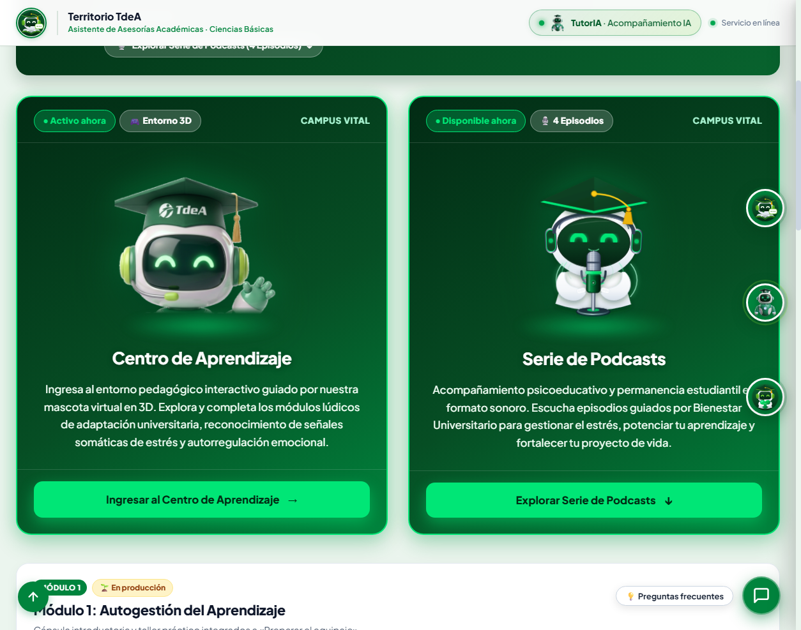
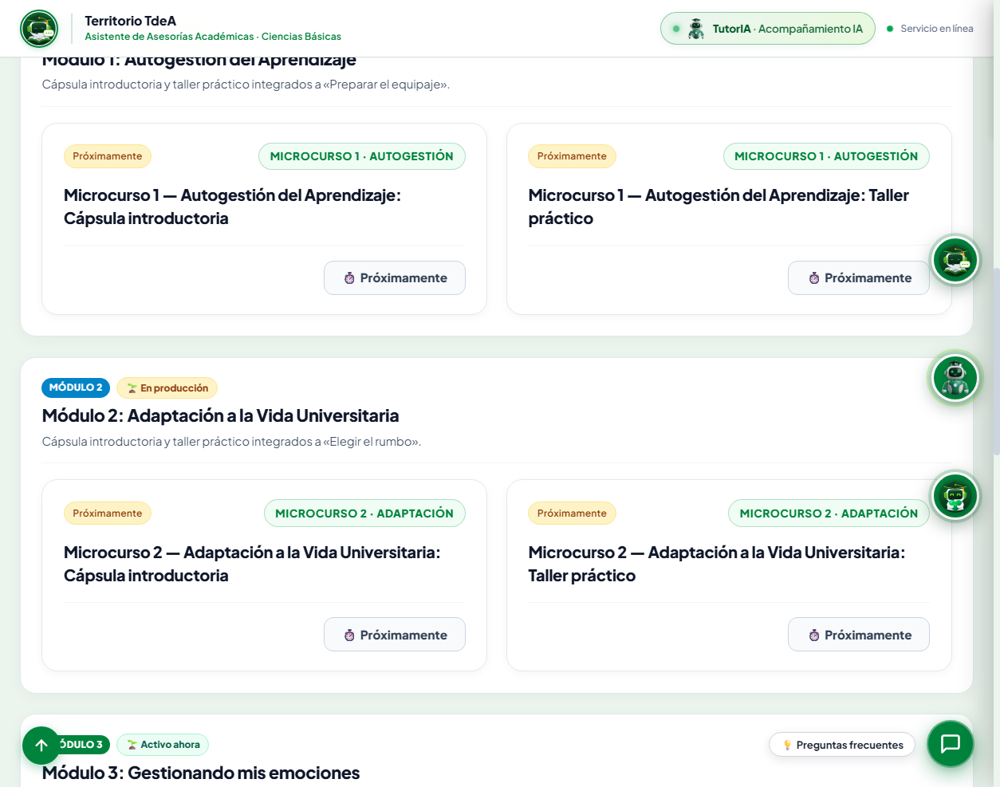
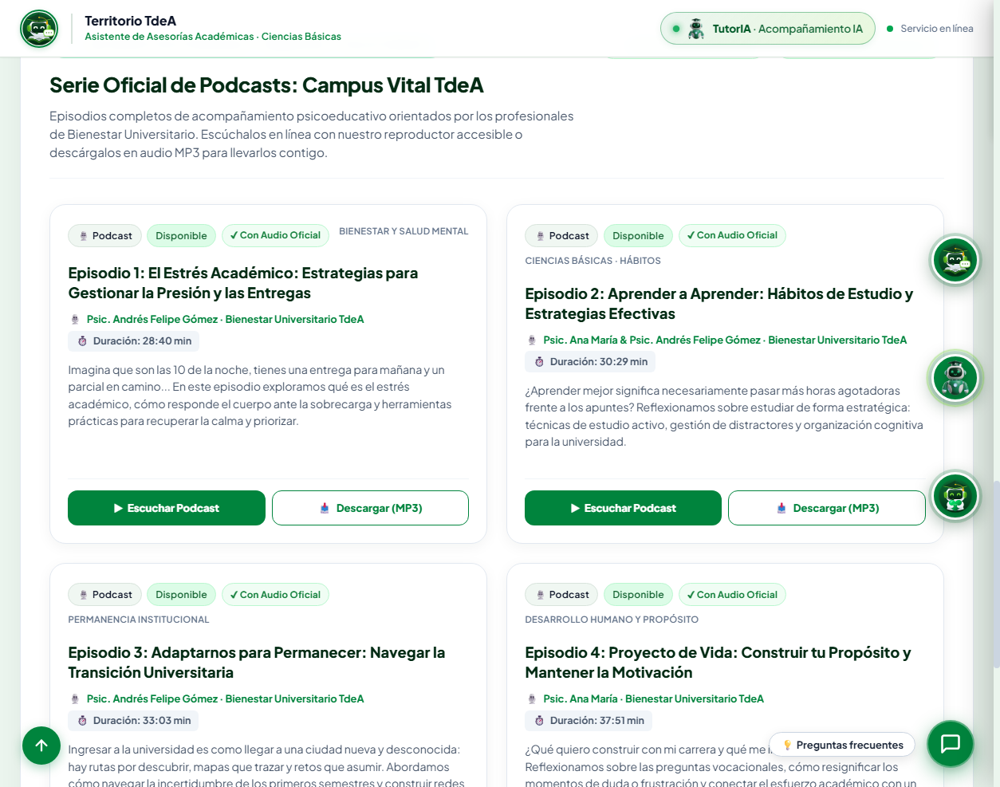
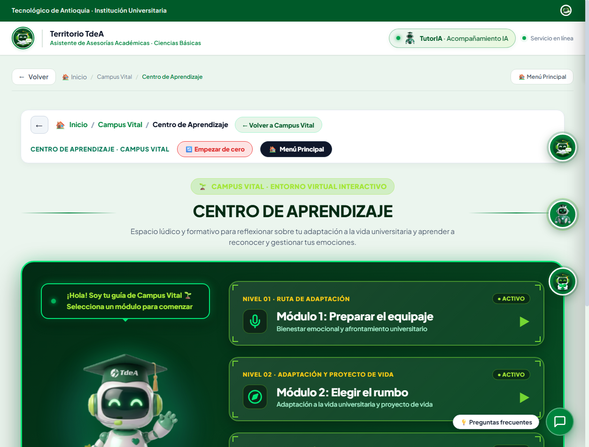
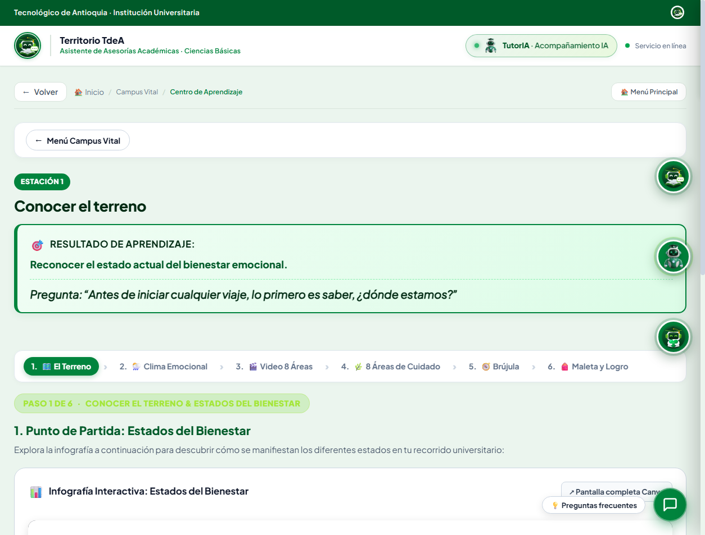
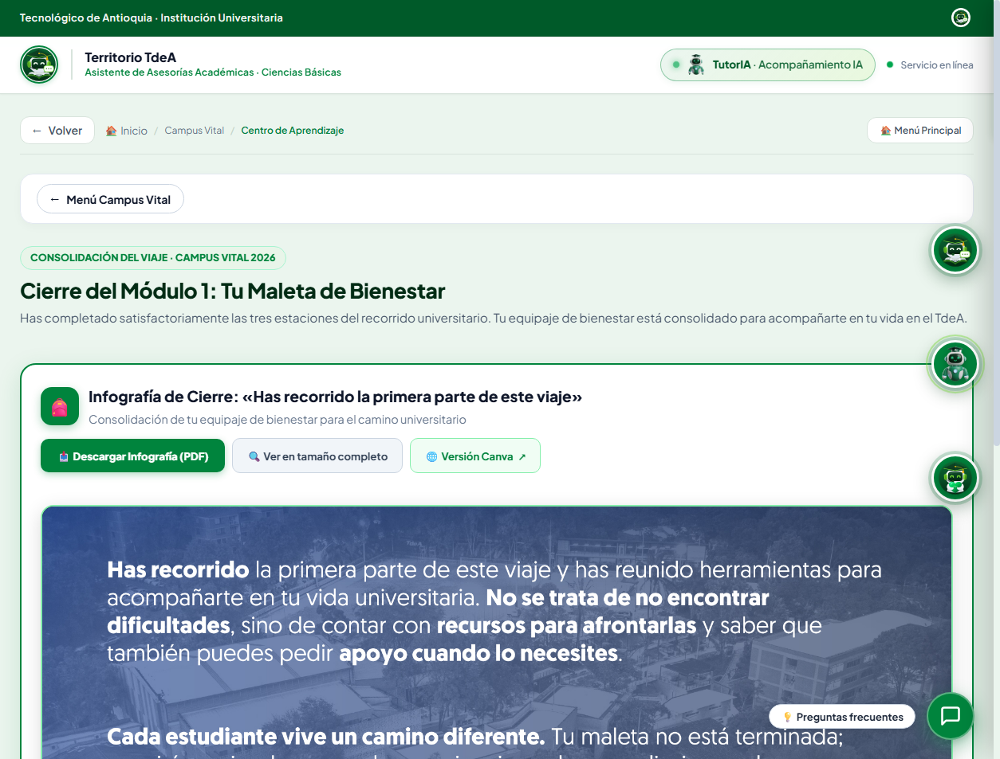
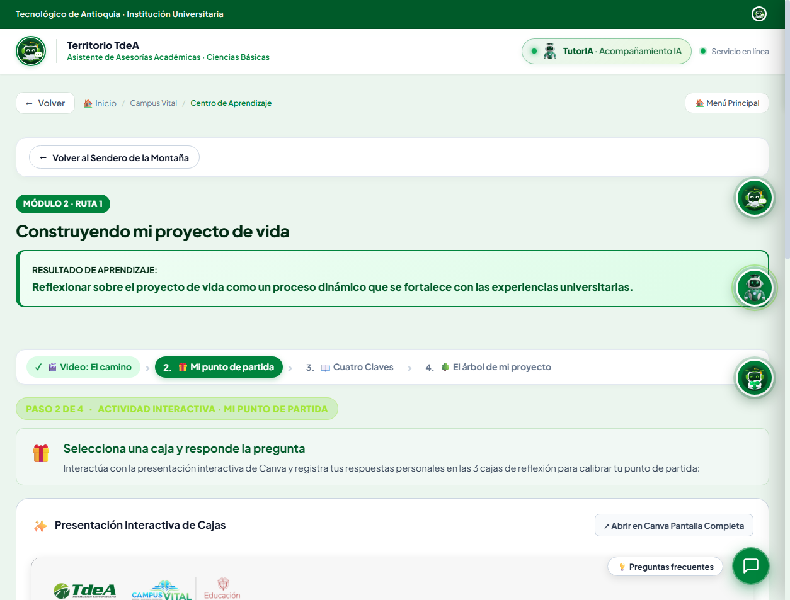
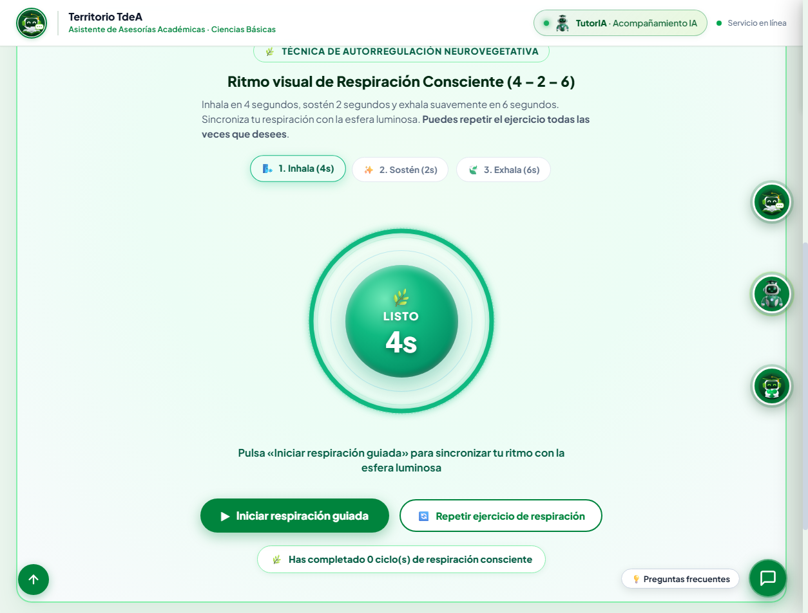
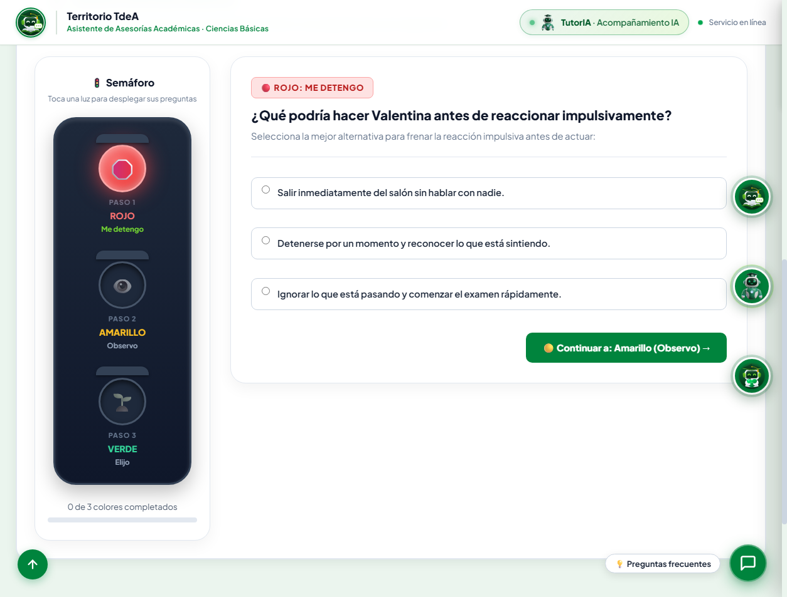
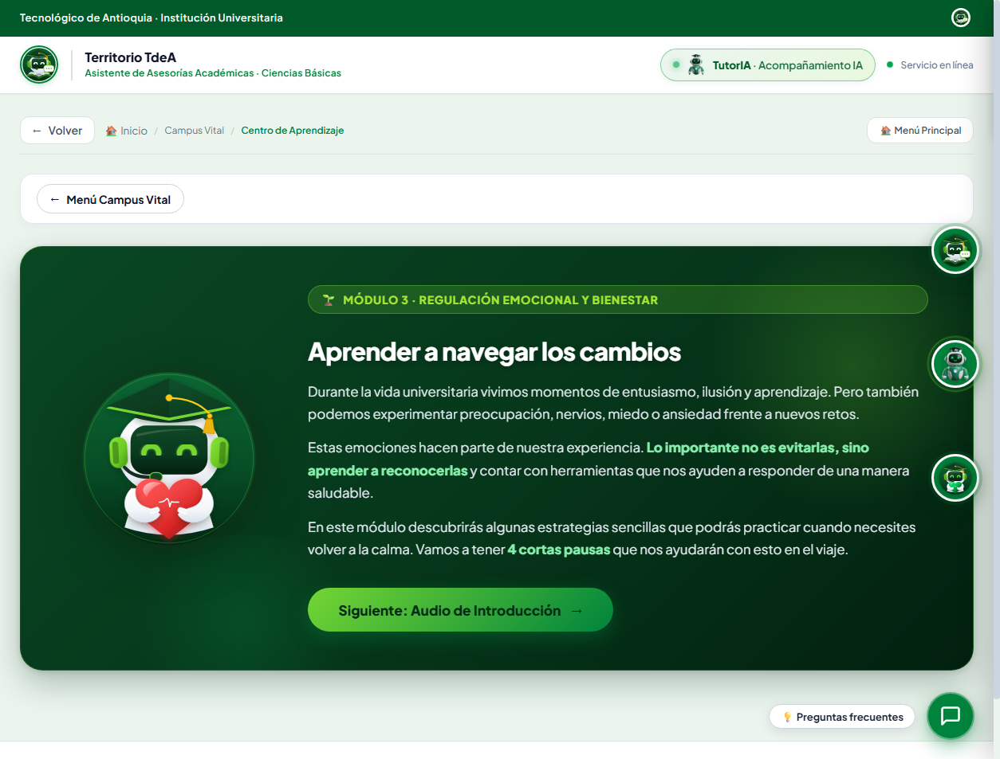

Manual paso a paso con capturas reales de pantalla para monitores académicos y pares asesores. Contiene la descripción completa de las vitrinas de acceso, el catálogo de microcursos, la serie de podcasts institucionales y los 3 módulos lúdicos del Centro de Aprendizaje 3D.
Campus Vital es el entorno digital psicoeducativo del Tecnológico de Antioquia diseñado para fortalecer la permanencia, prevenir la deserción temprana y brindar herramientas prácticas de autorregulación, adaptación a la vida universitaria y autogestión académica.
Al ingresar al enlace #/campus_vital, el estudiante se encuentra con el banner institucional y la vitrina de accesos directos estructurada en dos tarjetas gemelas verde oscuro con borde esmeralda.

Ubicados inmediatamente debajo de la vitrina, los microcursos son unidades formativas breves (15 a 20 minutos) estructuradas en tarjetas limpias con información pedagógica precisa.

Campus Vital incluye una serie de 4 episodios grabados por profesionales de Bienestar Institucional TdeA. Cuentan con reproductores de audio accesibles bajo estándares DUA.

Al hacer clic en la primera vitrina o visitar #/centro_aprendizaje, el estudiante entra a un entorno interactivo guiado por la Mascota Virtual 3D oficial del TdeA.

En la Estación 1 del viaje, el estudiante explora su estado emocional actual mediante la metáfora meteorológica y construye su rueda de bienestar multidimensional.

En el paso 2 de la Estación 3, los estudiantes interactúan con un lienzo digital donde construyen visualmente su mapa de personas y servicios de respaldo personal e institucional.
Al completar las 3 estaciones del Módulo 1, el estudiante visualiza la pantalla de consolidación oficial con la animación de su Maleta de Bienestar empacada y la bitácora del viajero.

El Módulo 2 ayuda al estudiante a articular su proyecto de vida universitario a través de la metáfora narrativa del Árbol de la Vida y el método de objetivos SMART.

El estrés y la sobrecarga académica siempre se manifiestan primero en el cuerpo. La Pausa 1 enseña a identificar las señales físicas tempranas antes de que deriven en una crisis o agotamiento severo.
La técnica de respiración diafragmática 4-2-6 activa de inmediato el sistema nervioso parasimpático, desacelerando el ritmo cardíaco y reduciendo la respuesta de alarma del cerebro.

A través del caso real de Valentina enfrentando un examen decisivo, los estudiantes interactúan con un semáforo físico digital cuyas luces despliegan preguntas específicas para cada fase reflexiva.

La última pausa del gimnasio emocional consolida la Técnica de anclaje sensorial 5-4-3-2-1 para salir de bucles de rumiación mental y permite armar un botiquín personalizado de calma.

Respuestas técnicas a las preguntas frecuentes de los monitores sobre seguridad de la información, persistencia de datos del estudiante y el protocolo oficial de remisión ante riesgos identificados.
localStorage): Todas las respuestas, notas de la bitácora y selecciones se guardan exclusivamente en el navegador del dispositivo del estudiante (clave tdea_learning_center_state).bienestar@tdea.edu.cocienciasbasicas@tdea.edu.co